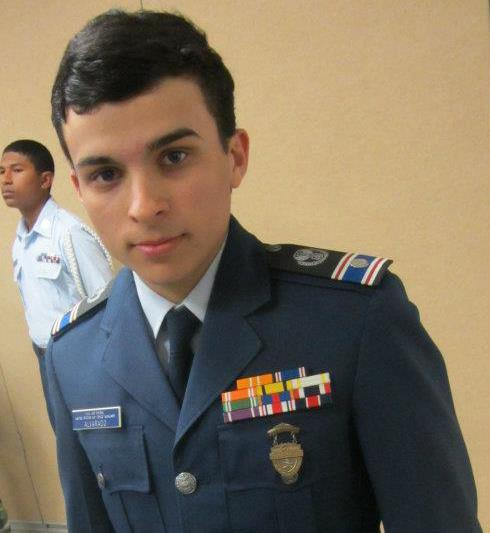

Work Experience
Field Technician
The Computer Guys of LA
July 2016 - Nov 2018
Provided technical support, working mainly with car dealerships. Work mostly autonomously. Solved a variety of computer along with Server and networking issues. Was let go due to budget cuts.
Shipping/Receiving and I.T. Support
Sanctuarie Designs
Nov. 2014 –July 2016
Worked as the head of Shipping and Receiving for a small clothing company based online. Operated as company’s I.T. support, helping employees with any computer issues.
E-3 Traniee
The United States Air Force
Nov 2013 - Feb 2014
Started Basic Training in San Antonio, Texas. Was unable to complete, due to unrelated medical complications (now resolved).
SIRI Internship
Jet Propulsion Laboratory
Feb 2018 - May 2018
Took Part in Project COSMIC with the stated goal of using machine learning software to recognize fresh impact craters on the surface of Mars. My completed objective was to create a python program that would take the images and relative data and make it legible for the TextureCam image recognition software
Education
Los Angeles Community College District
- Master Degree in Computer Scince (In Progress)
- GPA: 3.47
- Applying to Transfer to UCLA, CSUN, and or CalTech
Extracurricular
Civil Air Patrol
Cadet 1st Leutnant
Similar to JROTC, Civil Air Patrol or CAP is a United States Air Force Auxiliary Volunteer organization that specializes in Cadet Programs, emergency services, and Aerospace Education. I joined when I was 13 and immediately got involved. While only starting as a cadet basic through out my time there I eventually achieved the rank of Cadet 1st Lt. and held many positions including but not limited to Flight Commander, Event Squadron commander and Aerospace officer. My two biggest take aways from my time there was the leadership skills that I learned and refined; as well as the discovery of a talent for teaching and keeping people engaged.
Planetary Society
Volunteer

Similar to JROTC, Civil Air Patrol or CAP is a United States Air Force Auxiliary Volunteer organization that specializes in Cadet Programs, emergency services, and Aerospace Education. I joined when I was 13 and immediately got involved. While only starting as a cadet basic through out my time there I eventually achieved the rank of Cadet 1st Lt. and held many positions including but not limited to Flight Commander, Event Squadron commander and Aerospace officer. My to biggest take away from my time there the leadership skills and learned and refined and the discovery of a talent for teaching and keeping people engaged.
Skills
placeholder